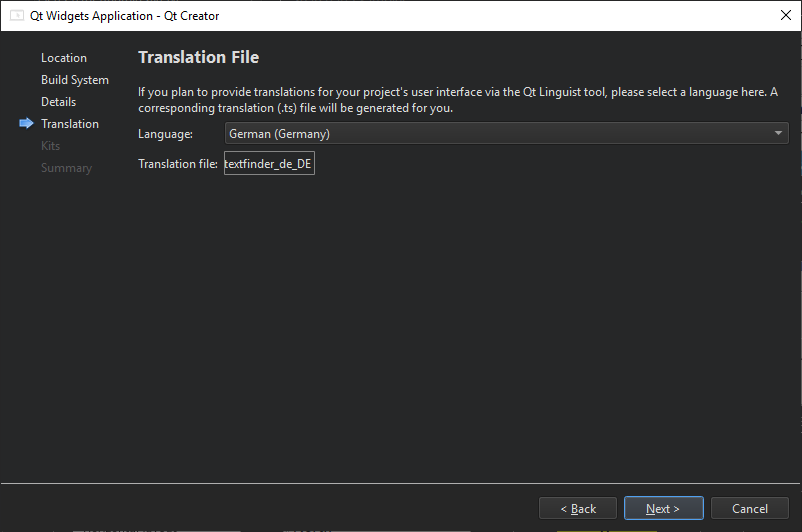
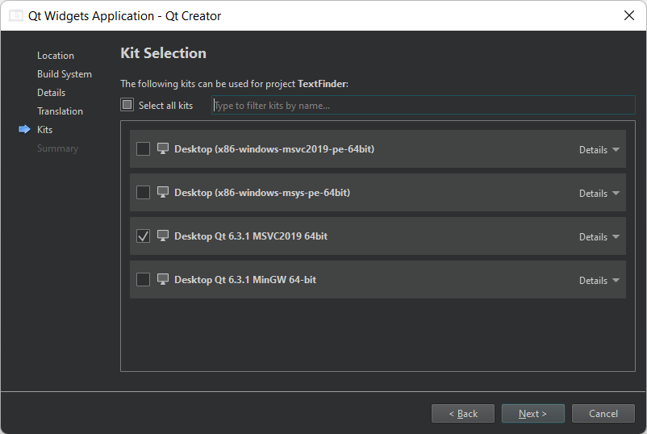
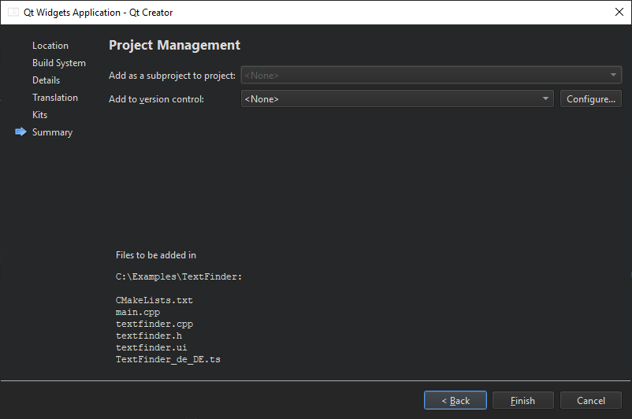
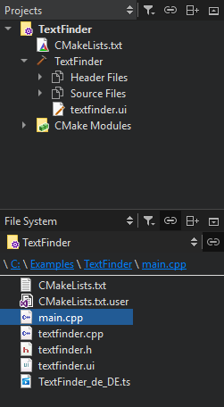
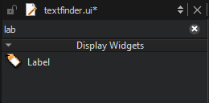
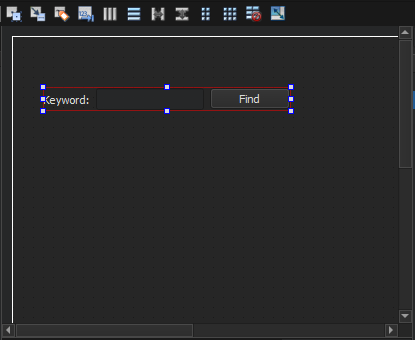

Creating a Qt Widget Based Application
This tutorial describes how to use Qt Creator to create a small Qt application, Text Finder. It is a simplified version of the Qt UI Tools Text Finder example. You'll use Qt Designer to construct the application user interface from Qt widgets and the code editor to write the application logic in C++.

Creating the Text Finder Project
- Select File > New Project > Application (Qt) > Qt Widgets Application > Choose.

The Project Location dialog opens.

- In the Name field, type TextFinder.
- In the Create in field, enter the path for the project files. For example,
C:\Qt\examples. - Select Next (on Windows and Linux) or Continue (on macOS) to open the Define Build System dialog.

- In the Build system field, select CMake as the build system to use for building the project.
- Select Next or Continue to open the Class Information dialog.

- In the Class name field, type TextFinder as the class name.
- In the Base class list, select QWidget as the base class type.
Note: The Header file, Source file and Form file fields are automatically updated to match the name of the class.
- Select Next or Continue to open the Translation File dialog.

- In the Language field, you can select a language that you plan to translate the application to. This sets up localization support for the application. You can add other languages later by editing the project file.
- Select Next or Continue to open the Kit Selection dialog.

- Select build and run kits for your project.
- Select Next or Continue to open the Project Management dialog.

- Review the project settings, and select Finish (on Windows and Linux) or Done (on macOS) to create the project.
Note: The project opens in the Edit mode, which hides these instructions. To return to these instructions, open the Help mode.
The TextFinder project now has the following files:
- main.cpp
- textfinder.h
- textfinder.cpp
- textfinder.ui
- CMakeLists.txt

The .h and .cpp files come with the necessary boiler plate code.
If you selected CMake as the build system, Qt Creator created a CMakeLists.txt project file for you.
Filling in the Missing Pieces
Begin by designing the user interface and then move on to filling in the missing code. Finally, add the find functionality.
Designing the User Interface

- In the Editor mode, double-click the textfinder.ui file in the Projects view to launch the integrated Qt Designer.
- Drag the following widgets to the form:
- Label (QLabel)
- Line Edit (QLineEdit)
- Push Button (QPushButton)

Note: To easily locate the widgets, use the search box at the top of the Sidebar. For example, to find the Label widget, start typing the word label.

- Double-click the Label widget and enter the text Keyword.
- Double-click the Push Button widget and enter the text Find.
- In the Properties view, change the objectName to findButton.

- Press Ctrl+A (or Cmd+A) to select the widgets and select Lay out Horizontally (or press Ctrl+H on Linux or Windows or Ctrl+Shift+H on macOS) to apply a horizontal layout (QHBoxLayout).

- Drag a Text Edit widget (QTextEdit) to the form.
- Select the screen area, and then select Lay out Vertically (or press Ctrl+L) to apply a vertical layout (QVBoxLayout).
Applying the horizontal and vertical layouts ensures that the application UI scales to different screen sizes.
- To call a find function when users select the Find button, you use the Qt signals and slots mechanism. A signal is emitted when a particular event occurs and a slot is a function that is called in response to a particular signal. Qt widgets have predefined signals and slots that you can use directly from Qt Designer. To add a slot for the find function:
- Right-click the Find button to open a context-menu.
- Select Go to Slot > clicked(), and then select OK.
This adds a private slot,
on_findButton_clicked(), to the header file, textfinder.h and a private function,TextFinder::on_findButton_clicked(), to the source file, textfinder.cpp.
- Press Ctrl+S (or Cmd+S) to save your changes.
For more information about designing forms with Qt Designer, see the Qt Designer Manual.
Completing the Header File
The textfinder.h file already has the necessary #includes, a constructor, a destructor, and the Ui object. You need to add a private function, loadTextFile(), to read and display the contents of the input text file in the QTextEdit.
- In the Projects view in the Edit view, double-click the
textfinder.hfile to open it for editing. - Add a private function to the
privatesection, after theUi::TextFinderpointer:private slots: void on_findButton_clicked(); private: Ui::TextFinder *ui; void loadTextFile();
Completing the Source File
Now that the header file is complete, move on to the source file, textfinder.cpp.
- In the Projects view in the Edit view, double-click the textfinder.cpp file to open it for editing.
- Add code to load a text file using QFile, read it with QTextStream, and then display it on
textEditwith QTextEdit::setPlainText():void TextFinder::loadTextFile() { QFile inputFile(":/input.txt"); inputFile.open(QIODevice::ReadOnly); QTextStream in(&inputFile); QString line = in.readAll(); inputFile.close(); ui->textEdit->setPlainText(line); QTextCursor cursor = ui->textEdit->textCursor(); cursor.movePosition(QTextCursor::Start, QTextCursor::MoveAnchor, 1); }
- To use QFile and QTextStream, add the following #includes to textfinder.cpp:
#include "./ui_textfinder.h" #include <QFile> #include <QTextStream>
- For the
on_findButton_clicked()slot, add code to extract the search string and use the QTextEdit::find() function to look for the search string within the text file:void TextFinder::on_findButton_clicked() { QString searchString = ui->lineEdit->text(); ui->textEdit->find(searchString, QTextDocument::FindWholeWords); }
- Add a line to call
loadTextFile()in the constructor:TextFinder::TextFinder(QWidget *parent) : QWidget(parent) , ui(new Ui::TextFinder) { ui->setupUi(this); loadTextFile(); }
The following line of code automatically calls the on_findButton_clicked() slot in the uic generated ui_textfinder.h file:
QMetaObject::connectSlotsByName(TextFinder);
Creating a Resource File
You need a resource file (.qrc) within which you embed the input text file. The input file can be any .txt file with a paragraph of text. Create a text file called input.txt and store it in the textfinder folder.
To add a resource file:
- Select File > New File > Qt > Qt Resource File > Choose.

The Choose the Location dialog opens.

- In the Name field, enter textfinder.
- In the Path field, enter the path to the project, and select Next or Continue.
The Project Management dialog opens.

- In the Add to project field, select TextFinder and select Finish or Done to open the file in the code editor.
- Select Add > Add Prefix.
- In the Prefix field, replace the default prefix with a slash (/).
- Select Add > Add Files, to locate and add input.txt.

Adding Resources to Project File
For the text file to appear when you run the application, you must specify the resource file as a source file in the CMakeLists.txt file that the wizard created for you:
set(PROJECT_SOURCES
main.cpp
textfinder.cpp
textfinder.h
textfinder.ui
${TS_FILES}
textfinder.qrc
)
Compiling and Running Your Application
Now that you have all the necessary files, select the  button to compile and run your application.
button to compile and run your application.